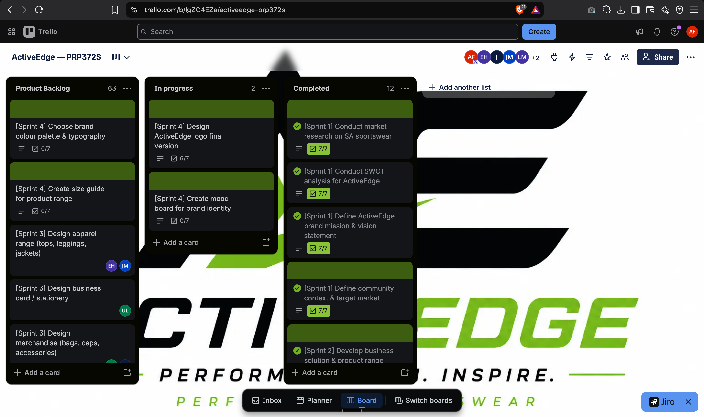

Present the ActiveEdge business case and communicate its value clearly.
Outline 14 slides; assign speaking sections; use a common theme; rehearse.
Source: 14–17 July logbookFrom a sustainable sportswear idea to a working website. My journey as ActiveEdge’s group leader, through five Agile artefacts and the lessons behind the work.
The purpose, people and agreements that gave our work direction.
Our purpose: develop ActiveEdge, a South African sustainable performance sportswear concept built around quality, environmental responsibility and accessible pricing.
| Member | Role | Ownership |
|---|---|---|
| Abdullahi Farah (me) | Group leader | Business idea, value proposition and coordination |
| Touheed Ismail | Researcher | Market research and community context |
| Jaden Abrahams | Writer / editor | 5W strategy and problem definition |
| Lebohang Mosimane | Designer | Document design and formatting |
| Entle Hlakuva | Presenter | Validation evidence and survey analysis |
WhatsApp for daily updates, Google Meet for meetings and Google Drive for shared documents. The charter sets Monday check-ins, replies within 24 hours for routine messages and 3 hours for urgent issues during core hours.
Use consensus or a majority decision; unresolved decisions come to the team leader after everyone has been heard.
Reflection adapted from my supplied project records.
As group leader, I was responsible for coordinating the team as well as developing the business idea and value proposition. The charter gave each person a clear area of ownership while keeping the final outcome shared.
My July logbook shows that agreeing on roles did not remove scheduling problems. When preparing the presentation, finding a shared working and rehearsal time was difficult. Confirming slide assignments and using a common template helped us bring the work together.
The lesson I take from this is to agree on both ownership and practical working arrangements early. In future, I would confirm availability and shared formatting before splitting a deliverable, then revisit those agreements when the project changes.
Turning broad deliverables and feedback into work we could act on.
Selected stories and task breakdowns from the supplied logbooks. These are project-record summaries rather than a complete export of the Trello board.
Outline 14 slides; assign speaking sections; use a common theme; rehearse.
Source: 14–17 July logbookAdd pages; improve colour and typography; build catalogue filters and product grid.
Source: 27–31 July logbookDemonstrate key pages; record feedback; fix mobile navigation and cart layout.
Source: 27–31 July logbookDocument design decisions; identify gaps; plan the next development phase.
Source: 31 July entryAllocate asset work; integrate imagery; expand website sections following feedback.
Source: 3–7 August logbookDefine milestones, owners and checkpoints; align technical and business objectives.
Source: 7 August entryThe records use “user story” for several team deliverables. They are reproduced here as documented; not all are end-customer feature stories.
Reflection adapted from my supplied project records.
Breaking the prototype work into smaller tasks made the feedback easier to act on. In the 29 July entry, I took ownership of navigation and cart fixes while other members worked on animations and typography.
On 30 July, I recorded fixing the mobile menu overlay and improving the cart order-summary layout. We also identified a filter-tab reset issue and documented it for the next development phase.
I learned that a broad request such as “improve the prototype” needs concrete tasks and a clear owner. In future I would add an explicit acceptance check to each task, such as testing navigation at a mobile width or checking that filters reset correctly after reload.
Making the work visible and responding to changing priorities.
Our Kanban-inspired workflow used Product Backlog → In progress → Completed. The supplied screenshot records the board at one point in time.
Snapshot captured 29 October 2026. These are list counts shown in the screenshot, not verified totals of delivered features.

| Visible backlog examples | Recorded context |
|---|---|
| Choose brand colour palette & typography | Sprint 4 · checklist 0/7 |
| Create size guide for product range | Sprint 4 · checklist 0/7 |
| Design apparel range | Sprint 3 |
| Design business card / stationery | Sprint 3 |
| Design merchandise | Sprint 3 |
Reflection adapted from my supplied project records.
The backlog changed as the project moved from the business case into a prototype and then a website. The July records focus on presenting the concept and refining key pages; the August records add brand assets, website structure and architecture planning.
Lecturer feedback helped us decide what to tackle next. After the prototype presentation, mobile navigation and the cart layout became immediate work. Later feedback highlighted the logo, product imagery and content depth.
The 31 July retrospective also records a debate about checkout. We agreed to document it for the next phase instead of rushing it into the prototype. I learned to prioritise against the purpose of the current milestone, while keeping deferred work visible.
Connecting short-term goals with specific tasks and review points.
| Period | Goal | Recorded work / outcome |
|---|---|---|
| 14–17 July 2026 | Business case presentation | 14-slide deck; slide ownership and rehearsal; presentation recorded on 15 July. |
| 27–31 July 2026 | Prototype enhancement and review | Homepage/navigation, catalogue, about and cart; lecturer feedback; mobile menu and cart fixes; retrospective. |
| 3–7 August 2026 | Website foundation and milestones | Review on 4 August; transition to website build; logo and imagery allocation; architecture and business model checkpoints. |
The charter describes a Kanban-inspired process. “Sprint” labels here follow the terminology in the logbooks and Trello cards.
Reflection adapted from my supplied project records.
The weekly work became more manageable when the team split feedback into specific deliverables. On 29 July we divided the changes among members, and my next entry records the navigation and cart fixes.
The difficult part was coordinating work that happened at the same time. My August logbook notes that simultaneous merges needed clear communication, and daily synchronisation helped keep the components aligned.
For the next project, I would keep each short cycle focused on a clear goal, with named owners and a review before taking on more work. I would also reserve time for integration and mobile checks rather than treating those as work to squeeze in at the end.
A record of progress, impediments and what came next.
I outlined the 14-slide presentation, confirmed member assignments, presented the introduction and value proposition, and recorded feedback.
Coordinating schedules and formatting survey charts took extra effort.
Use a shared presentation theme, assign sections early and back up the final materials.
Read original logbookI set up the website structure, built the hero and navigation, presented the prototype, and recorded mobile navigation and cart improvements.
Feedback needed prioritisation; a filter-reset edge case remained documented for later.
Split feedback by owner, review desktop and mobile, and document deferred features such as checkout.
Read original logbookThe team reviewed lecturer feedback, moved into the website build, allocated brand assets and set business/architecture milestones.
Asset preparation, parallel merges and balancing business expectations with technical feasibility required coordination.
Agree owners and realistic checkpoints, integrate regularly and keep technical work aligned to business goals.
Read original logbookReflection adapted from my supplied project records.
My logbooks connect the tasks on the board with what happened during the week: what I completed, what I planned next and what blocked progress. They show the movement from presenting a business idea to reviewing a prototype and planning the website foundation.
Looking across the entries, coordination is a recurring challenge. Scheduling presentation work, dividing feedback and integrating parallel changes all depended on the team communicating clearly.
I would carry forward the habit of recording decisions and unresolved issues as work happens. A short, specific entry is more useful than a vague progress update because it gives the next meeting a concrete starting point.
The charter established ownership. The backlog made the work visible. Short work cycles turned feedback into changes, and the logbooks recorded why those changes mattered. Together, these artefacts show how planning, communication and reflection supported our project.
My contribution included coordinating the team, developing the business idea and value proposition, preparing presentation material and working on the prototype’s navigation and cart. The practice I want to carry forward is simple: agree on the goal, make the next tasks clear, review the result and record what needs to change.
ActiveEdge team (2026) Agile Team Charter and Business Case. Supplied project documents.
Farah, A. (2026) ActiveEdge Agile Logbooks, 14–17 July, 27–31 July and 3–7 August. Supplied project records.
ActiveEdge team (2026) ActiveEdge — PRP372S Trello board. Screenshot supplied 29 October 2026.
Visual layout reference: Adams, J. R. (2026) Agile eWIL portfolio (Accessed: 29 October 2026).